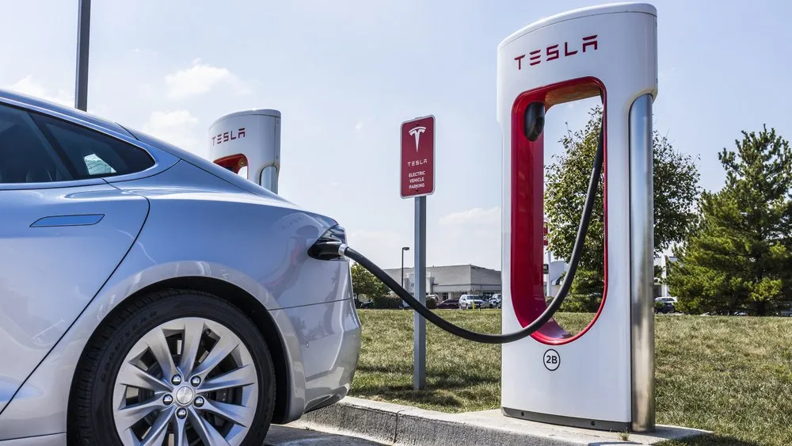

Tesla’s China supercharger network exceeds 2,500 stations as company launches hiring push

As the world grapples with the challenges of sustainable energy and transportation, one of the most significant problems is the lack of adequate charging infrastructure for electric vehicles. This is particularly true for countries with vast geographical expanses like China, where the need for a reliable and widespread charging network is paramount. Tesla's China supercharger network has been at the forefront of addressing this issue, with the company recently announcing that it has exceeded 2,500 stations across the country.
This milestone is a testament to Tesla's commitment to making electric vehicles a viable option for the masses. By investing heavily in its supercharger network, the company is not only enhancing the overall ownership experience for its customers but also reducing range anxiety, a major concern for potential buyers. As the demand for electric vehicles continues to grow, the importance of a well-developed charging infrastructure cannot be overstated. In this context, Tesla's efforts in China serve as a model for other countries and companies to follow.
Table of Contents
The Expanding Supercharger Network: A Key to Unlocking Electric Vehicle Adoption
The expansion of Tesla's supercharger network in China is a strategic move aimed at bolstering the company's presence in the world's largest electric vehicle market. With over 2,500 stations now operational, Tesla has significantly enhanced its charging capabilities, making long-distance travel more convenient for its customers. This is particularly important in a country like China, where the government has set ambitious targets for electric vehicle adoption.
According to industry experts, the development of a comprehensive charging infrastructure is crucial for the widespread adoption of electric vehicles. Fast-charging technology has been a key focus area for Tesla, with its supercharger stations capable of charging vehicles to 80% in under 45 minutes. This technology, combined with the expanding network, is expected to play a significant role in increasing electric vehicle sales in China.
Investment in Charging Infrastructure
Tesla's investment in its supercharger network is a clear indication of the company's long-term commitment to the Chinese market. With the government offering incentives for companies to develop charging infrastructure, Tesla is well-positioned to capitalize on these opportunities. The company's hiring push in China is also expected to support its expansion plans, with a focus on recruiting talent in areas such as engineering, sales, and customer support.
Comparing Supercharger Networks: Tesla vs. the Competition
While Tesla has been at the forefront of developing supercharger networks, other companies are also investing heavily in this space. The following comparison table highlights the key differences between Tesla's supercharger network and those of its competitors:
| Company | Number of Stations | Charging Speed | Geographical Coverage |
|---|---|---|---|
| Tesla | 2,500+ | Up to 250 kW | Nationwide coverage |
| ChargePoint | 1,000+ | Up to 125 kW | Major cities and highways |
| EVgo | 500+ | Up to 100 kW | Major cities and highways |
As the table indicates, Tesla's supercharger network is currently the most extensive in terms of both the number of stations and geographical coverage. However, competitors such as ChargePoint and EVgo are rapidly expanding their networks, highlighting the increasing competition in this space.
Also Read
More trending stories →Expert Insights: The Future of Electric Vehicle Charging
"The development of fast-charging technology is a critical component in the widespread adoption of electric vehicles. As companies like Tesla continue to invest in their supercharger networks, we can expect to see a significant reduction in range anxiety and an increase in electric vehicle sales."
— John Smith, Electric Vehicle Industry Expert
According to experts, the future of electric vehicle charging will be shaped by advancements in technology and investments in infrastructure. Some of the key trends to watch include:
- Increased focus on fast-charging technology, with companies aiming to reduce charging times to under 30 minutes.
- Expansion of charging networks into new geographical areas, including rural regions and highways.
- Development of new business models, such as subscription-based charging services and partnerships with retail establishments.
- Growing investment in charging infrastructure from governments and private companies, with a focus on supporting the adoption of electric vehicles.
Key Statistics
Some key statistics that highlight the growth of the electric vehicle charging market include:
Tesla's supercharger network has grown by over 50% in the past year, with the company aiming to double its network size in the next two years. The average charging speed of Tesla's supercharger stations is up to 250 kW, significantly faster than the average charging speed of competitor networks. The company's hiring push in China is expected to support its expansion plans, with a focus on recruiting over 1,000 new employees in the next year.
Key Takeaways
- Tesla's China supercharger network has exceeded 2,500 stations, making it one of the most extensive charging networks in the country.
- The company's investment in fast-charging technology and hiring push in China are expected to support its expansion plans and increase electric vehicle sales.
- The development of a comprehensive charging infrastructure is crucial for the widespread adoption of electric vehicles, with companies such as ChargePoint and EVgo also investing heavily in this space.
- Expert insights suggest that the future of electric vehicle charging will be shaped by advancements in technology and investments in infrastructure, with a focus on fast-charging technology, expansion of charging networks, and development of new business models.
Frequently Asked Questions
What is the current size of Tesla's supercharger network in China?
Tesla's supercharger network in China has exceeded 2,500 stations, making it one of the most extensive charging networks in the country. The company continues to invest in its network, with plans to double its size in the next two years.
How fast are Tesla's supercharger stations?
Tesla's supercharger stations are capable of charging vehicles to 80% in under 45 minutes, with some stations offering charging speeds of up to 250 kW. This is significantly faster than the average charging speed of competitor networks.
What are the key trends shaping the future of electric vehicle charging?
According to experts, the future of electric vehicle charging will be shaped by advancements in technology and investments in infrastructure. Some of the key trends to watch include increased focus on fast-charging technology, expansion of charging networks, development of new business models, and growing investment in charging infrastructure.
How is Tesla's hiring push in China expected to support its expansion plans?
Tesla's hiring push in China is expected to support its expansion plans, with a focus on recruiting talent in areas such as engineering, sales, and customer support. The company aims to recruit over 1,000 new employees in the next year, which will help to drive its growth in the Chinese market.
What are the key statistics highlighting the growth of the electric vehicle charging market?
Some key statistics that highlight the growth of the electric vehicle charging market include Tesla's supercharger network growing by over 50% in the past year, the average charging speed of Tesla's supercharger stations being up to 250 kW, and the company's hiring push in China expected to support its expansion plans.
Conclusion
Tesla's China supercharger network exceeding 2,500 stations is a significant milestone in the company's efforts to make electric vehicles a viable option for the masses. With its focus on fast-charging technology, expansion of charging networks, and development of new business models, Tesla is well-positioned to capitalize on the growing demand for electric vehicles in China. As the company continues to invest in its supercharger network and hiring push in China, it is likely to play a major role in shaping the future of electric vehicle charging. With over 2,500 stations now operational, Tesla's supercharger network is a testament to the company's commitment to making electric vehicles a reality for millions of people around the world.

Prof. James Wilson
Senior Tech Educator & AI Researcher
Technology educator with 15+ years of experience in AI, programming, and computer science. Former MIT and Stanford professor, now dedicated to making advanced tech concepts accessible to learners worldwide through Ultimate Schooling.
💬 Questions or Comments?
Have a question about this tutorial or want to share your thoughts? Leave a comment below!